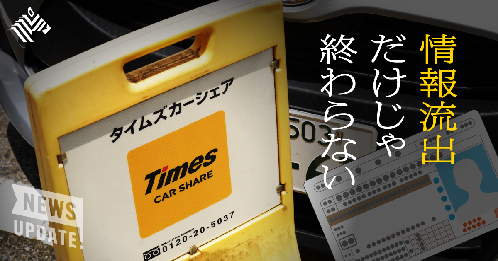
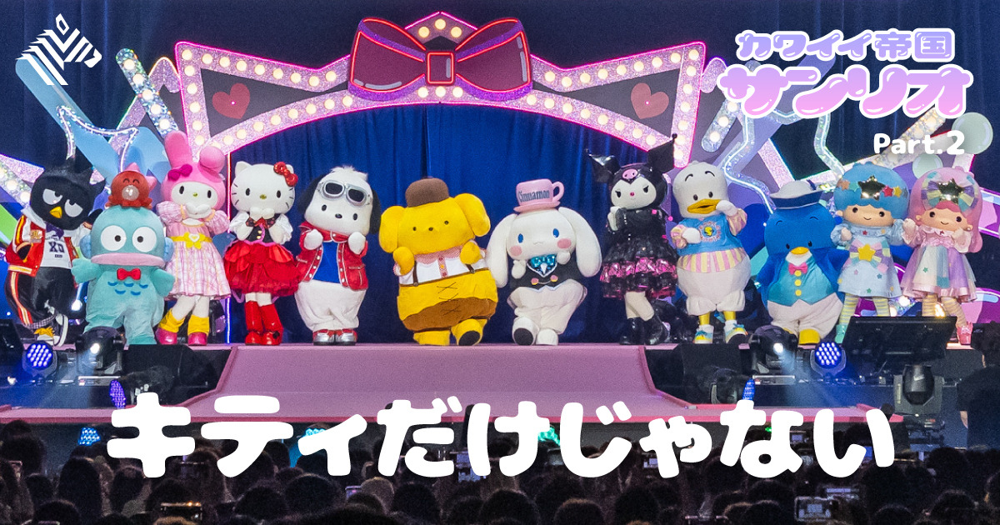
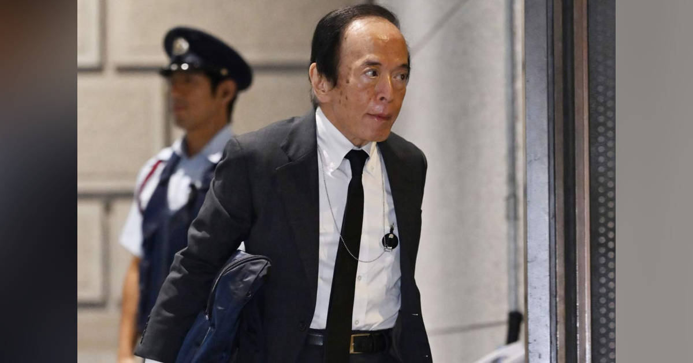
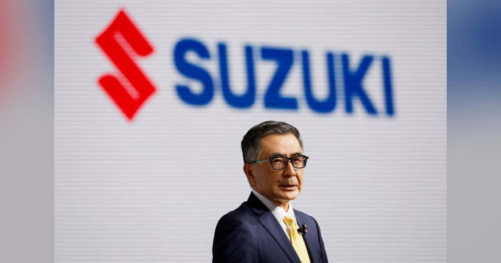

01【4.5万人登録】相次ぐ情報流出。次は集団訴訟がやってくる
発行日時：2026年10月6日 05:30 JST

あなたに関係ありそうな理由
入居者・取引先・会員の情報を扱う事業では、保存する情報の範囲と、事故時に説明する順番がそのまま信頼の問題になります。
概要
企業への不正アクセスと個人情報流出が相次いでいる。記事は10月5日に、焼肉きんぐの会員管理システムから約1078万件、大和証券の委託先への不正アクセスで約22万件が漏えいした可能性が公表されたと伝える。さらに約1週間前には、タイムズカーで最大約660万件が流出し、そのうち約160万件には運転免許証や家族確認書類の画像が含まれていた。件数の大きさだけでなく、本人確認に使われる画像と基本情報が組み合わさることが、被害を長期化させる要因になる。
東京商工リサーチによると、2025年に上場企業と子会社が公表した漏えい・紛失事故は180件、対象は約3063万6000人分だった。2012年から2025年までの累計は延べ2億1313万人分に達する。専門家は、AIが脆弱性の探索や高速な攻撃をしやすくする可能性に触れつつ、従来から必要な対策を確実に続けることが重要だと指摘する。利用者にとっては、どのサービスへ何を渡したかを把握しにくい状況そのものが、被害への備えを難しくしている。
とくに免許証画像が漏れた場合は、口座開設や消費者金融の申込になりすまされるおそれがある。日本信用情報機構には悪用防止の本人申告が殺到し、一時受付停止となった。専門家は、流出情報は直後ではなく半年から2年後に使われることもあると説明する。2027年4月から金融機関でICチップを使う本人確認が原則義務化される予定でも、利用者は不審な連絡に注意し、サービス側は認証の強さやデータ保存期間を確かめる必要がある。
企業側には、補償だけでなく保存の必要性と説明責任が問われる。タイムズカーの件では、集団訴訟を検討するサイトに10月5日時点で4万5000人超が登録した。退会後も約7年間、氏名や免許証画像を含む情報を保存していたことは、過失や慰謝料を判断する論点になり得る。記事は、危機前のリスク管理と危機後の対応を七対三で考えるべきだと紹介する。速報と確報の間にも調査の方向や判明事項を発信し続けられるかが、企業の信頼と損失を左右する。
個人情報保護法は、利用する必要がなくなった個人データを遅滞なく消去するよう努めることを求めている。利便性のために集めた情報が、後に大きな責任へ変わらないかを、取得時点から点検したい。
仕事や会話で使える一言
「守れる情報だけを集め、事故後に何をいつ説明するかまで平時に決めておきたいですね。」
NewsPicks原文を読む
02【全解明】サンリオが、次々と「人気キャラ」を生み出せる理由
発行日時：2026年10月6日 05:30 JST

あなたに関係ありそうな理由
長く使うブランドやサービスは、目先の販売量だけでなく、誰にどんな価値を届け続けるかを計画し、検証することが重要です。
概要
サンリオは、ハローキティだけに依存せず、クロミなど複数のキャラクターを育てる構造へ移っている。国内外の物販・ライセンス事業の売上総利益に占めるキティの割合は、2016年3月期の60.6％から2026年3月期には37.3％へ低下した。記事冒頭では、ロサンゼルスのKCON会場でクロミの展示に人が集まり、米小売チェーンTargetでもKATSEYEとのコラボが話題になった場面を描く。キティ抜きでキャラクターが前面に立てる状態を、事業の分散と成長の両面で目指している。
海外ではまず「HELLO KITTY AND FRIENDS」として、キティの認知を借りながら他のキャラクターに触れてもらう。反応が育つと、現地拠点から単独展開の声が出る。サンリオには450超のキャラクターがあるが、マーケティング予算を付けて重点的に育てるのは約10に絞る。Z世代の女性を主な相手にすると決めたキャラクターについては、売れそうでも対象外の商品を一時的に作らない判断もする。営業が作る商品と、キャラクターを育てる側の狙いを揃えるためだ。
育成は、売れているからすぐ広げるやり方ではない。市場、購入者、選ばれる理由を調べ、10年ほど成長し続けられるかを確かめたうえで、キャラクターごとに計画を作る。クロミは約5年前から専任プロデューサーを置き、おおむね三年ごとに「認知」「体験」「海外」と段階を進める。最初はポップアップや限定品で反応を見て、歌など接点を増やし、映像やイベントへの参加が伸びた段階で投資とライセンスを広げる。短期の売上ではなく、ファンの行動の深さを見ている。
人気キャラクターが増えると、同じ取引先にも異なるファン層に向けた提案ができ、ライセンスの選択肢が広がる。複数キャラクターをユニットにして関係性をSNSで見せ、箱推しと個別の支持を同時に育てる方法も使う。一方で、クロミの急速な広がりには飽きられる怖さもあるという。計画は必要だが、人気を完全に制御できるわけではない。表示コメントでも、創作物を長く育てるには、時間とキャラクター自身の輪郭を保つことが欠かせないという論点が出た。事業では、認知の拡大と持続性を分けて測る視点が参考になる。
短期の反応を手掛かりにしながらも、ブランドの約束を崩さないことが、次の展開へ進む土台になる。
仕事や会話で使える一言
「人気を追うだけでなく、誰にどんな体験を積み重ねてもらうかを十年単位で設計しているのですね。」
NewsPicks原文を読む
03フジＨＤ不動産事業売却、ブラックストーンやベインなど最終入札へ＝関係者
発行日時：2026年10月6日 15:19 JST
あなたに関係ありそうな理由
不動産を保有・運営する側では、物件価値だけでなく、売却方法、資金使途、関係者への説明を一つの判断として見る必要があります。
概要
フジ・メディア・ホールディングスが進める中核不動産子会社サンケイビルの売却で、ブラックストーン、ベイン・キャピタル、ウォーバーグ・ピンカス、サンライフ傘下のBGOが最終入札を準備しているとロイターが報じた。負債を含む取引額は1兆円規模に達する可能性があり、実現すれば国内不動産業界で最大級の買収案件となる。10月末までに拘束力のある提案を出し、フジHDが優先交渉先を選んだ後、提案内容について株主の承認を求める見通しだ。
焦点は価格だけではない。シンガポールの投資ファンド、ヴァサンタ・マスターファンドは、資産評価、取引スキーム、売却代金の使途の詳細開示を求めた。一部売却、スピンオフ、資産ごとの段階的売却といった代替案も検討すべきだとする。保有比率は1％未満だが、不動産ポートフォリオが大きく内容も多岐にわたるため、買い手が一部の大手PEファンドに限られ、既存株主に還元される価値が十分でなくなる可能性を問題にしている。表示コメントでも、売却とスピンオフをどう比べるかが論点になった。
背景には、日本の不動産市場への海外資本の関心がある。記事によると、オフィス需要の底堅さ、訪日客の増加、海外資本への開放性、円安などを受け、日本は世界で注目される投資市場の一つになっている。LSEGの集計では、日本の不動産資産を対象にしたM&A取引額は10月5日時点で155億ドル、約2兆4500億円となり、前年同期比45％増、2013年以来の高水準だった。今回の入札は、個別企業の資本政策であると同時に、市場の需給を映す事案でもある。
フジHDはアクティビスト投資家らから、不動産や政策保有株を見直し、資本効率を高めるよう求められてきた。2月には約2350億円の自社株買いを実施し、サンケイビルを含む不動産事業の見直しにも着手した。外部資本の導入や売却を通じ、メディア・コンテンツ事業への投資を増やし、資本効率を改善する考えだ。今後確認したいのは、最終提案の金額だけではない。資産の評価根拠、選考の公平さ、売却後に残る事業と資金の使い道が、株主・顧客・取引先に十分説明されるかである。
大きな資産の入れ替えほど、結論に至る過程も企業価値の一部として問われる。
仕事や会話で使える一言
「不動産の売却は価格だけでなく、代替案との比較と資金使途まで説明できて初めて判断できますね。」
NewsPicks原文を読む
04利上げペース加速も 物価２％到達受け
発行日時：2026年10月6日 07:09 JST

あなたに関係ありそうな理由
借入、賃料、投資、資金繰りを考える際は、金利の水準だけでなく、日銀が何を根拠にペースを変えようとしているかを見る必要があります。
概要
日銀は「基調的な物価上昇率」が2％に到達したことを受け、利上げのペースを速める考えだと記事は伝える。日銀は6月の利上げ後、植田和男総裁の下では最も短い3カ月の間隔で、9月に政策金利を1.25％へ引き上げた。これまで利上げはおおむね半年に1度のペースだったが、物価を引き上げる段階から、2％程度で安定させる段階へ政策の局面が変わったという認識が、次の判断の出発点になる。
利上げをしても、記事が挙げる金融面の指標には大きな変化が見えない。金融機関の貸し出しは増勢を維持し、日銀が10月1日に公表した短観でも、企業の資金繰り判断などに大きな変化はなかった。このため日銀は、現在の金融環境はなお緩和的だと判断している。むしろ今の金利水準では物価が2％から大きく上振れするリスクが高いと警戒を強め、利上げ間隔を従来より短くする方向へ傾いている。
ここで記事が区別しているのは、物価を上げることと、その上昇を安定させることだ。植田総裁は9月会合後、政策の局面が変化し、今後は2％程度で安定させていく観点が重要になったと説明した。この記事は次の利上げ時期や水準を断定してはいない。ただ、物価見通しだけでなく、貸し出し、企業の資金繰り、金融環境の緩和度を合わせて見ながら、ペースを判断しようとしている点を伝える。金利だけを単独の数字として見ないことが必要になる。
借入のある事業者や不動産の保有者にとっては、金利上昇の有無だけでなく、返済計画や新規投資の前提をどの時点で見直すかが実務上の論点になる。記事から直ちに個別の資金調達方針を決めることはできないが、短観や日銀会合で示される金融環境の評価を定期的に追う意味は増す。表示コメントには、貸し出しの伸びや、先行きの金利上昇を意識した借入の動きを見る意見もあった。物価、資金需要、金利のどれか一つに絞らず、前提の変化を早めに把握する姿勢が大切だ。
固定・変動を含む契約条件、借り換え時期、余裕資金の置き方は、それぞれ別の前提で影響を受ける。次回の会合だけを当てに行くより、金利が段階的に動いても事業計画が耐えられるかを確かめることが現実的だ。判断材料は定期的に更新したい。
仕事や会話で使える一言
「金利の数字だけでなく、日銀が金融環境をなお緩和的と見る根拠を追いたいですね。」
NewsPicks原文を読む
05スズキ初の軽ＥＶ、「最安値」と「好電費」で攻勢 中国ＢＹＤより安く
発行日時：2026年10月6日 10:27 JST

あなたに関係ありそうな理由
新しい設備や車両を比べる際は、導入価格だけでなく、日常の利用条件、性能、補助制度、維持のしやすさを同じ土俵で確認する必要があります。
概要
スズキは同社初の軽乗用EV「eSKY」を212万円から販売すると発表した。中国BYDが7月に発売した軽EV「ラッコ」より2万5000円安く、軽EVでは国内最安値になる。発売は11月16日で、3グレードを用意し、月1000台の販売を計画する。国内の軽自動車市場を長く開拓してきたスズキが、海外勢では本格参入と位置付けられるBYDとの比較で、価格を明確な入口に据えた。記事は、販売価格と電費の両方で需要をつくろうとする戦略を伝えている。
eSKYの電費は97ワット時／キロメートルで、日産「サクラ」、ホンダ「N-ONE e:」、BYD「ラッコ」を上回るとされる。鈴木俊宏社長は、軽乗用車の一般的な一日の走行距離が約20キロメートルであることを踏まえ、5分の急速充電で約50キロ走れると説明した。航続距離は310キロで、国内競合2車種とラッコの最廉価グレードを上回り、軽EVで最長のラッコ上級グレードに迫る。数字は、通勤や買い物だけでなく週末の近距離移動も想定した商品設計を示している。
軽EVでは、車両価格だけで比較を終えられない。電費、航続距離、充電時間、装備、購入時に使える制度、維持費の考え方で利用者の判断は変わる。表示コメントでも、補助金を含めた実質的な負担、スライドドアなどの装備差、電池の調達先まで分けて見るべきだという意見が出た。記事は価格と電費を中心に伝えるが、購入者は自分の走行距離、駐車場での充電可否、家族の乗降や荷物の条件へ置き換えて確認することになる。
海外販売について、鈴木社長はまず日本の顧客がどう受け取るかを重視し、その延長線上で可能性があると述べた。軽規格のガソリン車の一部はパキスタンなどで販売されており、期待値はあるとも話している。今回の発表は、EVが高価格帯の選択肢にとどまらず、日常の足である軽自動車で価格と効率を競う段階に入ったことを示す。今後は月1000台という販売計画に対する受注、充電の使い勝手、競合の対抗策が、国内市場での定着を測る材料になる。
使う場面から逆算して選ぶことが、価格表だけでは見えない満足度の差につながる。比較条件と確認日を一覧に残しておく価値もある。
仕事や会話で使える一言
「最安値かどうかより、自分の走行距離と充電環境で使い切れる性能かを比べたいですね。」
NewsPicks原文を読む